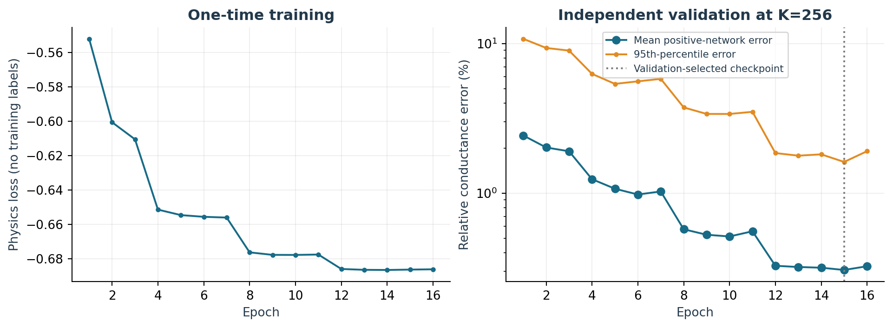
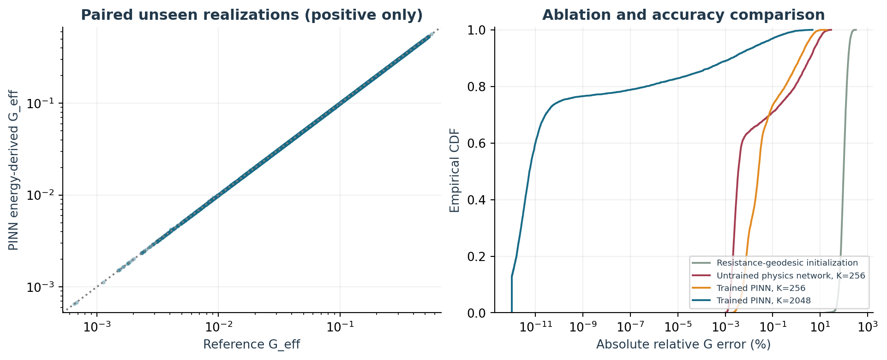
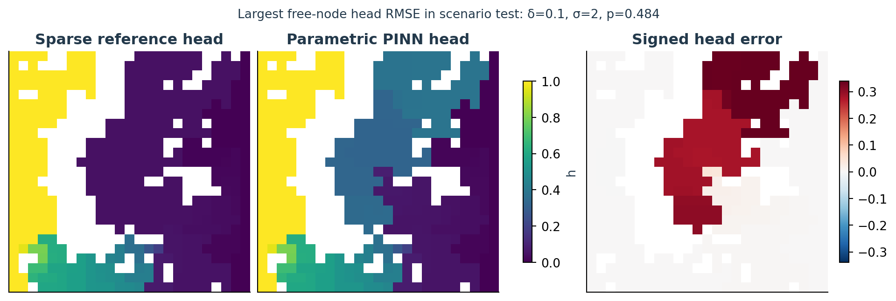
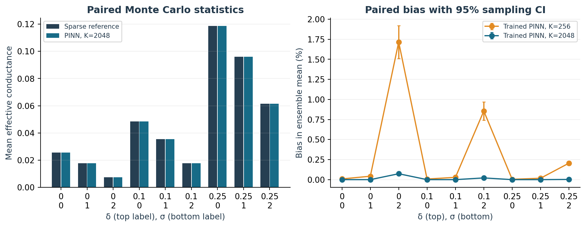
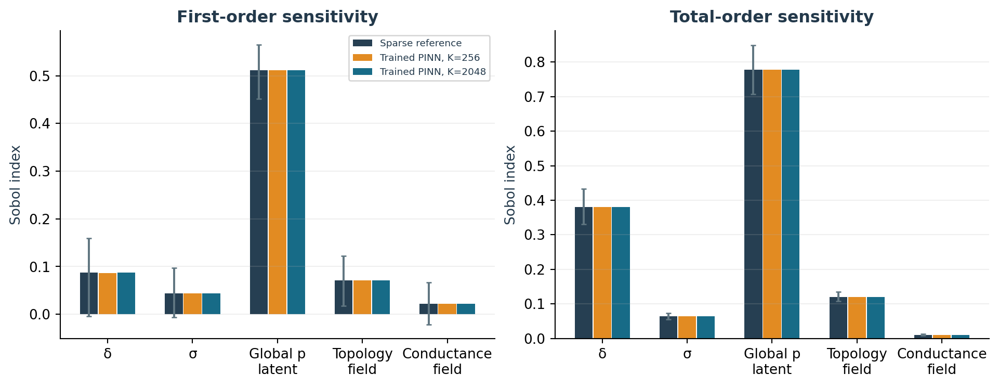
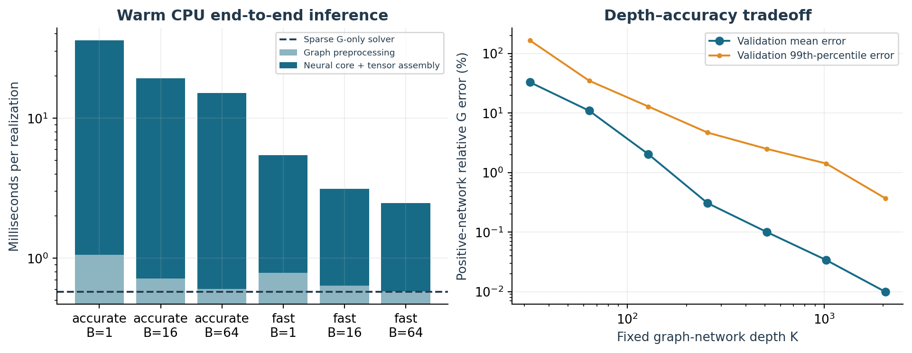
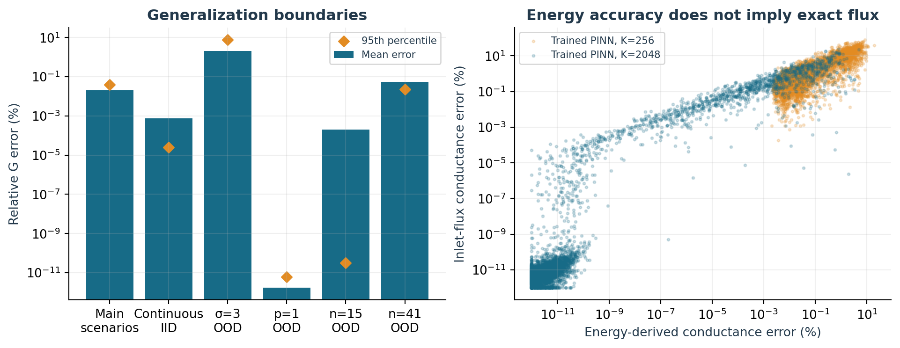

مقایسه PINN پارامتری گرافی با حلگر مستقیم معتبر. مدل، کل میدان رسانایی و پارامترهای فیزیکی را دریافت میکند، هد را پیشبینی و رسانایی مؤثر را تخمین میزند. وزنها برای ورودی جدید دوباره استفاده میشوند؛ حل دستگاه تنک یا آموزش مجدد در زمان پیشبینی وجود ندارد.
| ویژگی | حل مستقیم تنک | PINN پارامتری گرافی |
|---|---|---|
| معادلات | بقای جریان کیرشهف | همان فیزیک گراف؛ تابع هزینه انرژی |
| ورودی | کل میدان رسانایی و هد مرزها | کل میدان، δ و p و σ، هد مرزها |
| آموزش اولیه | ندارد | ۴۰۹۶ شبکه عبوری؛ بدون برچسب جواب |
| ورودی تازه | حل دستگاه تنک جدید | پیشپردازش گراف و K لایه ثابت |
| رسانایی مؤثر | شار ورودی بر اختلاف هد | تخمین کران بالای مبتنی بر انرژی |
| بقای جریان | تا دقت حلگر خطی | تقریبی؛ با آزمون جدا سنجیده شد |
| شرط مرزی و جریان صفر | دقیق | با قید ساختاری دقیق |
نتیجه عملی: مدل برای بیشتر پیشبینیهای رسانایی در دامنه آموزش دقیق است، ولی خطا برای همه نمونهها یکسان نیست. معماری، شبکهای با بازکردن تعداد ثابتی گام فیزیکی و پیشپردازش گراف است؛ فرمول بسته یا تنها یک MLP نیست. سریعترین تنظیم PINN در این آزمون 4.35 برابر زمان حلگر مستقیمِ فقط رسانایی هزینه داشت؛ نقطه سربهسر مثبتی مشاهده نشد. حلگر مستقیم برای این شبکه کوچک، مرجع مناسب دقت باقی میماند.
دو شبکه با δ، p و σ یکسان میتوانند آرایش متفاوت و حتی وضعیت اتصال متفاوت داشته باشند. در ۱۰۰۰ نمونه با δ=0, p=0.5, σ=1، انحراف معیار رسانایی 0.02097 و خطای RMSE بهترین پیشبینی ثابت تجربی 0.02096 بود. بنابراین مدل باید میدان کامل یا بذر مشخصکننده آن را بگیرد. با ورودی صرفاً δ و σ، خروجی معنادار، آمار مجموعهای از شبکههای نمونهبرداریشده است.
همان شبکه ۲۵×۲۵ با ۶۲۵ گره و ۱۲۰۰ لینک استفاده شد. در هر تحقق، p=0.5+δU و رسانایی لینک فعال g=exp(σZ) است. δ و p و σ ورودی شرطی شبکهاند؛ مختصات، توصیفگرهای رسانایی و آرایش و فاصله مقاومتی کوتاهترین مسیر به دو مرز نیز ورودی گرهها هستند. وقتی میدان g معلوم باشد، پارامترهای آماری نقش توصیف توزیع را دارند و نیروی فیزیکی تازهای به قانون کیرشهف اضافه نمیکنند.
نامساوی در حساب دقیق برای هدهای مجاز برقرار است و بهتنهایی کوچکبودن خطا را گواهی نمیکند. دور از تعادل، انرژی و شار ورودی از هد تقریبی برابر نیستند؛ هر دو جدا ثبت شدهاند.
این یک معماری گرافی فیزیکآگاه با گامهای بازشده و تابع انرژی، مرتبط با ایدههای PINN و Deep Ritz است [۱،۲]. مشتق مکانی یک PINN پیوسته در اینجا جایگزین معادلات گراف نشده است. برای هد دلخواه، h=h_R+(h_L−h_R)h_unit و Q_est=G_est(h_L−h_R) اعمال میشود؛ ضرب کل g در c نیز رسانایی مؤثر را دقیقاً در c ضرب میکند.
از 8,155 میدان مستقل تولیدشده، 4,096 شبکه عبوری برای آموزش نگه داشته شد. شبکههای غیرعبوری به آموزش نیاز ندارند، چون پاسخشان ساختاری معلوم است. نیمی از نمونههای δ و σ از مقادیر سناریوها و نیمی از توزیعهای یکنواخت در [0,0.25] و [0,2] گرفته شدند؛ سپس یک p سراسری برای هر شبکه نمونهبرداری شد.
لگاریتم صعودی است و کمینه انرژی هر شبکه عبوری همان جواب کیرشهف است. هیچ برچسب هد یا رسانایی مرجع در آموزش استفاده نشد. حلگر مستقیم فقط برای ۵۱۲ شبکه اعتبارسنجی مستقل و آزمونهای بعدی فراخوانی شد. بهینهساز Adam، نرخ اولیه ۰٫۰۰۱۵، زوال وزن 10⁻⁷، محدودسازی نرم گرادیان در ۱، دسته ۳۲ و ۱۶ دوره با افزایش عمق 32→64→128→256 استفاده شد. آموزش float32 و ارزیابی float64، روی CPU با دو رشته PyTorch بود.

حلقه آموزش 297.4 ثانیه و کل آمادهسازی، اعتبارسنجی و انتخاب عمق 334.7 ثانیه طول کشید. دوره 15 انتخاب شد. حالت سریع K=۲۵۶ و حالت دقیق K=۲۰۴۸ دارد؛ افزایش عمق با همان وزنهاست و آموزش تازهای انجام نمیشود.
بذر پایه 20261105، جریان آموزش ۱۰۱، اعتبارسنجی ۱۰۲، آزمون ۲۰۱ تا ۲۰۵، حساسیت ۳۰۱، بوتاسترپ ۳۰۲ و زمانسنجی ۴۰۱ است. فقط یک بذر آموزش اجرا شد؛ پراکندگی ناشی از تکرار آموزش سنجیده نشده است.
وزنها و عمقها پیش از آزمون ثابت شدند. آزمون اصلی شامل ۹ سناریوی δ و σ، هرکدام ۱۰۰۰ تحقق، بهاضافه ۱۰۰۰ نمونه پیوسته در دامنه آموزش است. هر دو روش دقیقاً همان آرایه g را دریافت میکنند. خطای نسبی فقط برای مرجع مثبت محاسبه میشود؛ شبکههای با جریان صفر جدا سنجیده میشوند.
| روش | میانگین خطای نسبی G | صدک ۹۵ | بیشترین | میانگین RMSE هد آزاد |
|---|---|---|---|---|
| فقط فاصله مقاومتی | 103.6598% | 174.1826% | 319.4120% | 0.096001 |
| بدون آموزش؛ ۲۵۶ لایه | 1.1381% | 7.6419% | 28.8138% | 0.015183 |
| آموزشدیده؛ ۲۵۶ لایه | 0.4705% | 2.9005% | 18.8355% | 0.009909 |
| آموزشدیده؛ ۲۰۴۸ لایه | 0.0200% | 0.0393% | 4.7386% | 0.001460 |

در عمق ۲۵۶، آموزش، میانگین خطای رسانایی سناریوها را نسبت به معماری فیزیکی بدون آموزش حدود 2.42 برابر بهتر کرد. بخش بزرگی از دقت نهایی از لایههای فیزیکی گراف میآید و نباید همه آن را به رمزگذار کوچک نسبت داد. در آزمون پیوسته مستقل، میانگین خطای نسبی حالت دقیق 0.0008% و بیشترین خطا 0.1448% بود.
برای حالت دقیق در آزمون سناریویی، میانگین RMSE هد گرههای آزاد 0.001460، صدک ۹۵ خطای نسبی شار ورودی 1.1201% و صدک ۹۵ عدمتطابق نسبی ورودی و خروجی 3.0237% است. تخمین انرژی رسانایی از شار مرزی هد تقریبی دقیقتر است؛ بقای جریان همچنان تقریبی است. همه شارها و باقیماندهها در خروجی خام ثبت شدهاند.

نمونه نمایشدادهشده RMSE هد آزاد 0.19366 دارد. دقت خروجی وزندار با انرژی، برای خطای موضعی بدون وزن در زیرگرافهای بدشرط کران یکنواختی ایجاد نمیکند.
| δ | σ | میانگین قدیمی¹ | مرجع جفتشده | میانگین PINN | اریبی میانگین | احتمال صفر |
|---|---|---|---|---|---|---|
| 0.00 | 0 | 0.02620 | 0.02555 | 0.02555 | -0.00000% | 0.494 |
| 0.00 | 1 | 0.01825 | 0.01770 | 0.01770 | 0.00000% | 0.494 |
| 0.00 | 2 | 0.00770 | 0.00733 | 0.00733 | 0.07336% | 0.494 |
| 0.10 | 0 | 0.04991 | 0.04837 | 0.04837 | -0.00000% | 0.502 |
| 0.10 | 1 | 0.03681 | 0.03549 | 0.03549 | 0.00000% | 0.502 |
| 0.10 | 2 | 0.01833 | 0.01761 | 0.01761 | 0.02126% | 0.502 |
| 0.25 | 0 | 0.12216 | 0.11864 | 0.11864 | -0.00000% | 0.498 |
| 0.25 | 1 | 0.09923 | 0.09591 | 0.09591 | 0.00000% | 0.498 |
| 0.25 | 2 | 0.06385 | 0.06147 | 0.06148 | 0.00246% | 0.498 |
¹مطالعه اولیه برای هر سناریو ۱۰٬۰۰۰ نمونه و مقایسه جفتشده حاضر ۱۰۰۰ نمونه مستقل تازه دارد. اختلاف دو میانگین مرجع میتواند از نمونهگیری مونتکارلو باشد؛ اختلاف مدل، فقط تفاضل همان سطر جفتشده است.
میانگین، انحراف معیار، میانه، صدک ۹۵، احتمال صفر و فاصله اطمینان ۹۵٪ اریبی جفتشده برای همه روشها ذخیره شده است. احتمال صفر بهدلیل پیشپردازش مؤلفهها دقیقاً برابر است. فاصله اریبی، خطای تعداد محدود نمونه آزمون را بیان میکند؛ بازه پیشبینی میدانی یا عدمقطعیت تکرار آموزش نیست. رابط آماری همچنان میدانهای تصادفی را نمونهبرداری میکند، اما برای آنها دستگاه تنک حل نمیکند.

طرح گروهی یانسن با 2,048 جفت پایه مستقل، یعنی 14,336 میدان مرجع، و ۱۰۰۰ بازنمونهگیری بوتاسترپ از سطرهای جفتشده اجرا شد. پنج گروه مستقل همان δ، σ، U، W و Z هستند. شاخصهای مرتبه اول و کل، فاصلههای اطمینان و اختلاف جفتشده مدل با مرجع همگی ذخیره شدهاند.
| گروه ورودی | اثر کل مستقیم | اثر کل PINN | اختلاف جفتشده [فاصله ۹۵٪] |
|---|---|---|---|
| δ | 0.3804 | 0.3804 | 1.72e-06 [-1.23e-07, 5.03e-06] |
| σ | 0.0637 | 0.0637 | -3.82e-06 [-7.65e-06, -1.22e-06] |
| متغیر نهفته اتصال U | 0.7784 | 0.7784 | 2.23e-06 [6.10e-07, 4.96e-06] |
| میدان آرایش W | 0.1204 | 0.1204 | -1.25e-06 [-4.08e-06, 3.11e-07] |
| میدان رسانایی Z | 0.0105 | 0.0105 | -1.17e-06 [-3.30e-06, -1.74e-08] |

این نمونه حساسیت تازه است؛ مطالعه اولیه ۱۶٬۳۸۴ جفت پایه داشت. اختلاف نقطهای شاخصهای دو مطالعه، صرفاً خطای مدل نیست. اختلافهای جفتشده جدول، تقریب شبکه را روی ورودی یکسان جدا میکنند. رتبهبندی به توزیع ورودی وابسته است و شاخصهای کل همپوشانی دارند. وجود مسیر در هر دو روش از آرایش تعیین میشود؛ σ و Z بر رخداد دودویی اتصال اثری ندارند.

| حالت | دسته | پیشپردازش ms | هسته ms | کل ms/نمونه | مستقیم/PINN |
|---|---|---|---|---|---|
| آموزشدیده؛ ۲۰۴۸ لایه | 1 | 1.055 | 34.887 | 35.942 | 0.016× |
| آموزشدیده؛ ۲۰۴۸ لایه | 16 | 0.714 | 18.619 | 19.333 | 0.031× |
| آموزشدیده؛ ۲۰۴۸ لایه | 64 | 0.606 | 14.543 | 15.097 | 0.040× |
| آموزشدیده؛ ۲۵۶ لایه | 1 | 0.786 | 4.682 | 5.472 | 0.105× |
| آموزشدیده؛ ۲۵۶ لایه | 16 | 0.639 | 2.501 | 3.132 | 0.178× |
| آموزشدیده؛ ۲۵۶ لایه | 64 | 0.579 | 1.901 | 2.508 | 0.226× |
اعداد، میانه سه تکرار روی همان ۶۴ میدان تازه هستند. زمان حل مستقیم فقط رسانایی 0.576 میلیثانیه برای هر نمونه بود؛ زمان حل میدان کامل هم در CSV آمده است. PINN با دو رشته CPU و float64، پس از بارگذاری وزنها اجرا شد. مؤلفهها، دایکسترا و ساخت تنسور در زمان مدل حساب شدهاند؛ تولید میدان تصادفی برای هر دو روش حذف شده است. نتیجهای درباره GPU یا شبکه بزرگتر فرض نمیشود.
حالت دقیق، خطای کمتر و هزینه بیشتری دارد. نقطه سربهسر مثبت فقط زمانی تعریف میشود که هزینه هر پیشبینی شبکه کمتر از حل مستقیم باشد: T_offline/(t_sparse−t_neural). زمان بارگذاری مدل در آزمون گرم نیست و برای استفاده تکنمونه سرد باید اضافه شود. هزینه آموزش نیز از مقایسه حذف یا در روش مرجع پنهان نشده است.
| خانواده آزمون | تعداد | مثبت | میانگین خطای G | صدک ۹۵ | بیشترین |
|---|---|---|---|---|---|
| continuous | 1000 | 508 | 0.0008% | 0.0000% | 0.1448% |
| ood_sigma3 | 250 | 164 | 2.0779% | 7.6191% | 20.2555% |
| ood_fully_connected | 250 | 250 | 0.0000% | 0.0000% | 0.0000% |
| ood_size15 | 250 | 132 | 0.0002% | 0.0000% | 0.0251% |
| ood_size41 | 250 | 126 | 0.0549% | 0.0232% | 2.5557% |

دامنه آموزش، اندازه ۲۵، δ∈[0,0.25]، p تصادفی پیرامون ۰٫۵ و σ∈[0,2] است. آزمون خارج دامنه شامل σ=۳، اتصال کامل p=۱ و اندازههای ۱۵ و ۴۱ است. برای اندازه تازه، همان وزنها با شاخصهای گراف بازساختهشده استفاده شدند؛ آموزش مجدد انجام نشد. این بررسی، انتقال اکتشافی است و تضمین تعمیم یکنواخت برای همه اندازهها نیست.
در σ=۳، میانگین خطای رسانایی حالت دقیق به 2.0779% و بیشترین خطا به 20.2555% رسید. اختلاف شدید رسانایی و خوشههای ضعیفمتصل میتوانند در عمق ثابت کند همگرا شوند. شبکه کاملاً متصل، با وجود خارجدامنهبودن، ممکن است آسانتر باشد. خطای کوچک G، همه هدها و شارها را گواهی نمیکند.
شرط مرزی دقیق و تشخیص جریان صفر، قیود فیزیکی طراحیشدهاند و موفقیت یادگیری محسوب نمیشوند. تحلیل مؤلفه و دایکسترا برای هر میدان هنوز لازماند. هیچ حل تنک تصحیحی بعد از مدل اجرا نشده است. این معماری ادعای قویترِ پاسخ فوری از چند پارامتر اسکالر برای هر شبکه تصادفی ممکن را محقق نمیکند؛ خطای تقریب مدل و خطای نمونهگیری باید جدا بمانند.
تمام خروجیهای این مرحله در پوشه مستقل parametric_pinn/ قرار دارند؛ دادهها و گزارشهای روش مستقیم حفظ شدهاند. وزن آموزشدیده و کنترل بدون آموزش، تاریخچه آموزش، خروجیهای جفتشده، تحلیل حساسیت، زمانسنجی، مثالهای میدان، دفترچه اجراشده، اسکریپتها و ارائه قابلویرایش تحویل شدهاند.
فرمان پیشفرض هرگز حلگر مرجع را فراخوانی نمیکند. برای بررسی اختیاری از --compare-reference و برای ذخیره هد از --save-heads استفاده کنید. هد دو مرز و ضریب مقیاس رسانایی قابلتنظیماند. فایل رسانایی، آرایه ۱۲۰۰تایی با ترتیب لینکهای افقی و سپس عمودی، سطرمحور است. API دستهای از یک وزن بارگذاریشده استفاده میکند. برای بذرهای متفاوت، پاسخ با همان پارامترهای آماری میتواند متفاوت باشد.
۲۴ آزمون قبلی و ۱۲ آزمون جدید شامل شبکه تحلیلی، کران انرژی، گرادیان انرژی، شرط مرزی، جریان صفر، مقیاسپذیری، تطابق دسته و تکنمونه، تولید آموزش بدون برچسب و آزمون جلوگیری از فراخوانی حلگر مستقیم در پیشبینی است. ممیزی جداگانه، جدولها، قاعده صفر، سازگاری انرژی و میدان، وزنها و دفترچه اجراشده را بررسی میکند. اثر انگشت فایلها در فهرست اصلی مخزن ثبت شده است.
یک نگاشت پارامتری فیزیکآگاه قابلاستفاده مجدد ساخته شد که رسانایی بیشتر نمونههای درون دامنه را دقیق پیشبینی میکند. حل مستقیم برای این شبکه کوچک، دقت عددی قویتر و زمان CPU بهتری دارد. حذف تحلیلی شاخههای آویزان، یادگیری پیششرطساز چندسطحی، بهینهسازی اجرای دستهای و توسعه به شکستگی سهبعدی میتوانند مراحل بعدی باشند؛ هرکدام به اعتبارسنجی و محاسبه منصفانه هزینه نیاز دارند.
[1] Raissi, M., Perdikaris, P., Karniadakis, G. E. (2019). Physics-informed neural networks: A deep learning framework for solving forward and inverse problems involving nonlinear partial differential equations. J. Computational Physics 378, 686–707. doi:10.1016/j.jcp.2018.10.045.
[2] E, W., Yu, B. (2018). The Deep Ritz Method: A Deep Learning-Based Numerical Algorithm for Solving Variational Problems. Communications in Mathematics and Statistics 6, 1–12. doi:10.1007/s40304-018-0127-z.
[3] Jansen, M. J. W. (1999). Analysis of variance designs for model output. Computer Physics Communications 117, 35–43. doi:10.1016/S0010-4655(98)00154-4.
[4] The supplied mini-project brief and the separately preserved direct-solver study in this repository. The present unrolled graph architecture is a custom discrete, parametric physics-informed model; it is not the original continuum architecture in [1].